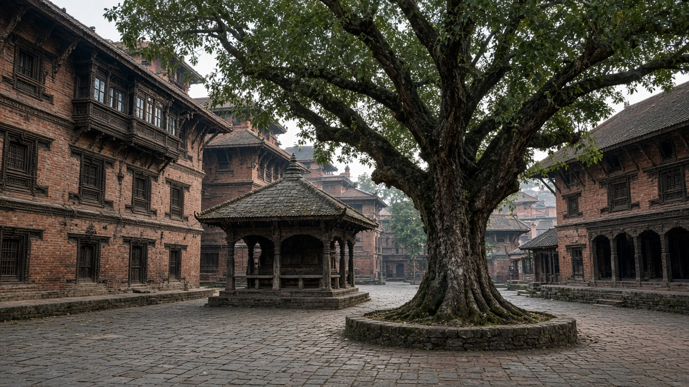
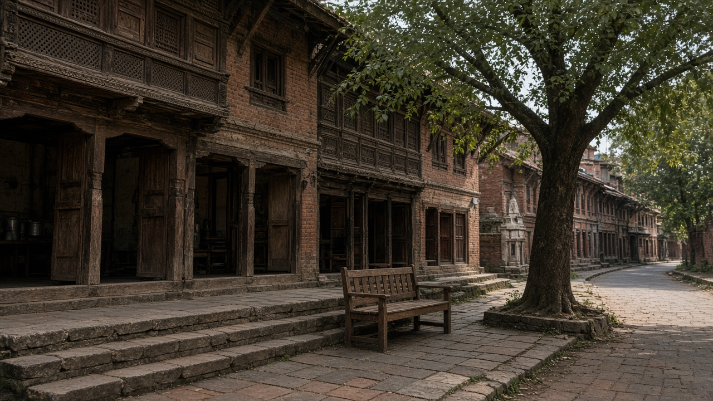
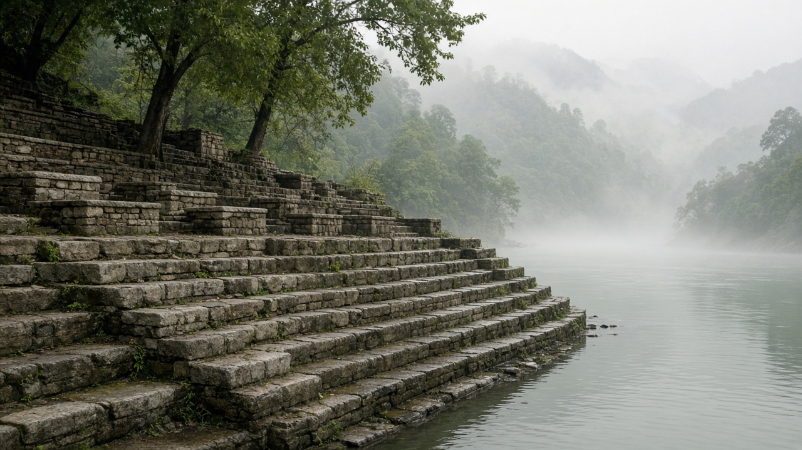

Public Space and Livable Streets
Published on August 20, 2026

Public space is the city’s living room: squares, market streets, river ghats, temple courtyards, and leftover lots where strangers can sit without buying anything. Livable streets treat the roadway as social space as well as movement, slowing vehicles so vendors, children, and elders can share the kerb. Seating, shade, drinking water, toilets where appropriate, and lighting after dark decide who feels welcome. When streets are only for through-traffic, civic life retreats into malls and private compounds. Historic Newar squares and Pokhara lakeside walks show how dense public rooms can carry festivals, trade, and rest in a small area if cars do not occupy every metre.
Design is about edges and time. Active shop fronts, steps, and trees make people linger; blank walls and high fences empty a plaza. Temporary closures for evening markets, school hours, or festivals test new layouts before expensive reconstruction. Street vending needs marked pitches and waste collection rather than periodic eviction that destroys livelihoods. Safety for women and minorities comes from eyes on the street, overlapping uses from morning to night, and clear sightlines—not only cameras. Inclusive public space also means ramps, tactile paths, and places where informal workers can pause without being treated as clutter.
Municipalities should inventory squares and streets the way they inventory roads, then fund small upgrades ward by ward: benches, shade, crossings, and surface repair. Rules for private frontages can require doors onto the street instead of parking podiums. Emerging municipalities can keep market chowks and river steps as public before they are fenced for parking. Success is counted in dwell time, diversity of users through the day, and whether residents choose to meet outdoors. A livable street network multiplies scarce indoor space and gives cities a democratic identity that no private development can replace.

सार्वजनिक स्थान शहरको बैठक कोठा हो: चोक, बजार गल्ली, नदी घाट, मन्दिर आँगन र बाँकी जग्गा जहाँ अपरिचितले केही नकिनी बस्न सक्छन्। बाँच्न मिल्ने सडकले बाटोलाई आवतजावतसँगै सामाजिक ठाउँ मान्छ, सवारी ढिलो पारेर पसले, बालबालिका र वृद्धले कर्ब साझा गर्न सक्छन्। बस्ने ठाउँ, छाया, पिउने पानी, उपयुक्त ठाउँमा शौचालय र अँध्यारोपछि बत्तीले को स्वागत महसुस गर्छ भन्ने तय गर्छ। सडक केवल छिचोल्ने ट्राफिकका लागि भए नागरिक जीवन मल र निजी परिसरमा भाग्छ। ऐतिहासिक नेवार चोक र पोखरा तालछेउ हिँडाइले देखाउँछन् कि गाडीले प्रत्येक मिटर नखाए साना सार्वजनिक कोठाले चाड, व्यापार र आराम बोक्न सक्छन्।
डिजाइन किनारा र समयको कुरा हो। सक्रिय पसल अगाडि, सिँढी र रूखले मानिस अल्झाउँछन्; खाली पर्खाल र अग्लो बारले चोक रित्ताउँछन्। साँझ बजार, विद्यालय समय वा चाडका लागि अस्थायी बन्दले महँगो पुनर्निर्माणअघि नयाँ विन्यास जाँच्छन्। सडक व्यापारलाई चिह्नित पिच र फोहोर संकलन चाहिन्छ, जीविकोपार्जन नाश गर्ने आवधिक निष्कासन होइन। महिला र अल्पसंख्यक सुरक्षा सडकमा आँखा, बिहानदेखि रातसम्म दोहोरिने प्रयोग र स्पष्ट दृष्टिबाट आउँछ—क्यामेरा मात्र होइन। समावेशी सार्वजनिक स्थान भनेको र्याम्प, स्पर्श पथ र अनौपचारिक कामदारलाई फोहोर नठानी रोकिने ठाउँ पनि हो।
नगरपालिकाले सडक गन्ने जस्तै चोक र गल्ली सूची गर्नुपर्छ, अनि वडा-वडा साना सुधार कोष गर्नुपर्छ: बेन्च, छाया, क्रसिङ र सतह मर्मत। निजी अगाडिका नियमले पार्किङ उठाएको तलाभन्दा सडकतिर ढोका अनिवार्य गर्न सक्छन्। उदाउँदो नगरले बजार चोक र नदी सिँढी पार्किङका लागि घेरिनुअघि सार्वजनिक राख्न सक्छन्। सफलता बसाइ समय, दिनभर प्रयोगकर्ता विविधता र बासिन्दा बाहिर भेट्न रोजे कि भन्नेमा गनिन्छ। बाँच्न मिल्ने सडक सञ्जालले दुर्लभ भित्री ठाउँ गुणन गर्छ र शहरलाई कुनै निजी विकासले नदिने लोकतान्त्रिक पहिचान दिन्छ।

सार्वजनिक स्थान शहर का बैठक कक्ष है: चौक, बाज़ार गलियाँ, नदी घाट, मंदिर आँगन और बची ज़मीन जहाँ अजनबी कुछ खरीदे बिना बैठ सकते हैं। जीने योग्य सड़कें मार्ग को आवागमन के साथ सामाजिक जगह मानती हैं, वाहन धीमे कर विक्रेता, बच्चे और वृद्ध कर्ब साझा कर सकें। बैठने की जगह, छाया, पीने का पानी, उपयुक्त जगह शौचालय और अंधेरा बाद रोशनी तय करते हैं कि कौन स्वागत महसूस करता है। सड़क केवल छेदक ट्रैफ़िक की हो तो नागरिक जीवन मॉल और निजी परिसरों में भागता है। ऐतिहासिक नेवार चौक और पोखरा ताल किनारे चलना दिखाते हैं कि गाड़ियाँ हर मीटर न खाएँ तो छोटे सार्वजनिक कमरे त्योहार, व्यापार और विश्राम उठा सकते हैं।
डिज़ाइन किनारे और समय की बात है। सक्रिय दुकान आगे, सीढ़ियाँ और पेड़ लोगों को ठहराते हैं; खाली दीवारें और ऊँची बाड़ चौक खाली कर देती हैं। शाम बाज़ार, विद्यालय समय या त्योहार के लिए अस्थायी बंद महँगे पुनर्निर्माण से पहले नया विन्यास परखते हैं। सड़क व्यापार को चिह्नित पिच और कचरा संग्रह चाहिए, आजीविका नष्ट करने वाली आवधिक बेदखली नहीं। महिलाओं और अल्पसंख्यकों की सुरक्षा सड़क पर आँखों, सुबह से रात तक दोहराए उपयोग और स्पष्ट दृष्टि से आती है—केवल कैमरों से नहीं। समावेशी सार्वजनिक स्थान का अर्थ रैंप, स्पर्श पथ और अनौपचारिक कामगारों के ठहरने की जगह भी है जिन्हें कचरा न माना जाए।
नगरपालिकाओं को सड़कें गिनने की तरह चौक और गलियाँ सूचीबद्ध करनी चाहिए, फिर वार्ड-वार्ड छोटे सुधार कोष करने चाहिए: बेंच, छाया, क्रॉसिंग और सतह मरम्मत। निजी अग्रभाग नियम पार्किंग उठाई मंज़िल के बजाय सड़क की ओर दरवाज़े अनिवार्य कर सकते हैं। उभरते नगर बाज़ार चौक और नदी सीढ़ियाँ पार्किंग के लिए घिरने से पहले सार्वजनिक रख सकते हैं। सफलता ठहराव समय, दिन भर उपयोगकर्ता विविधता और इस बात में गिनी जाती है कि निवासी बाहर मिलना चुनते हैं या नहीं। जीने योग्य सड़क नेटवर्क दुर्लभ भीतरी जगह गुणित करता है और शहर को कोई निजी विकास न दे सकने वाली लोकतांत्रिक पहचान देता है।